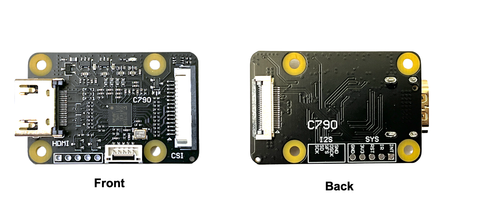
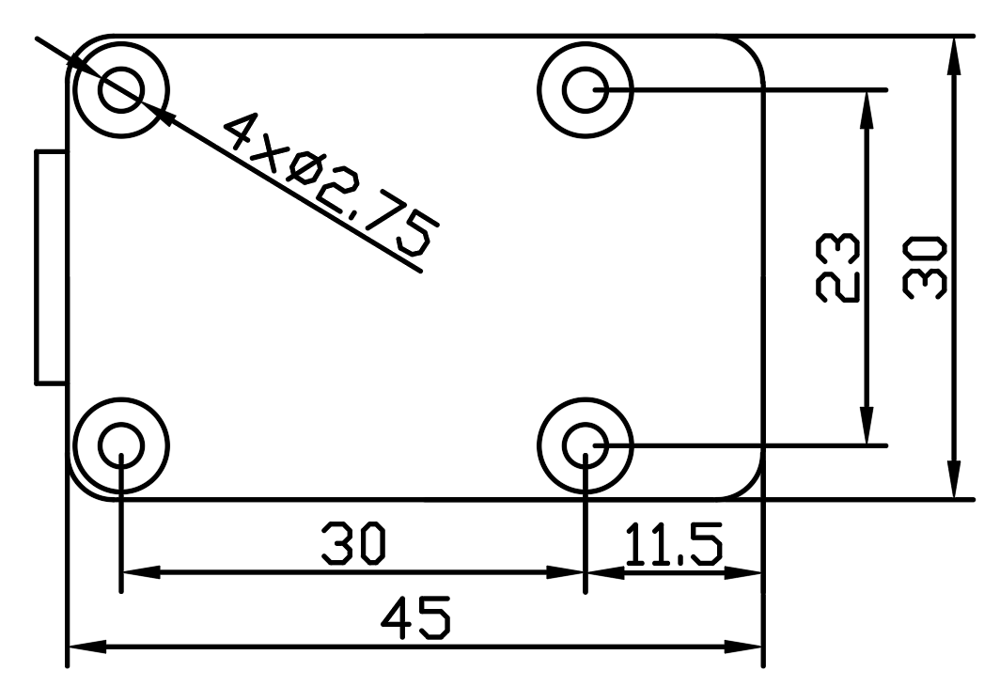
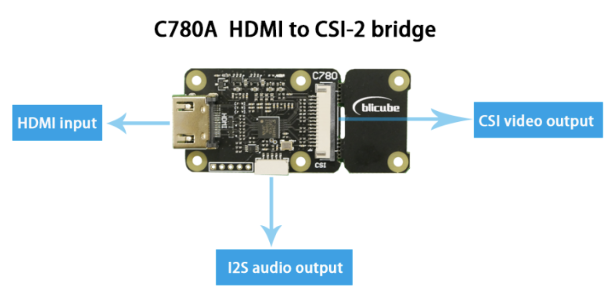
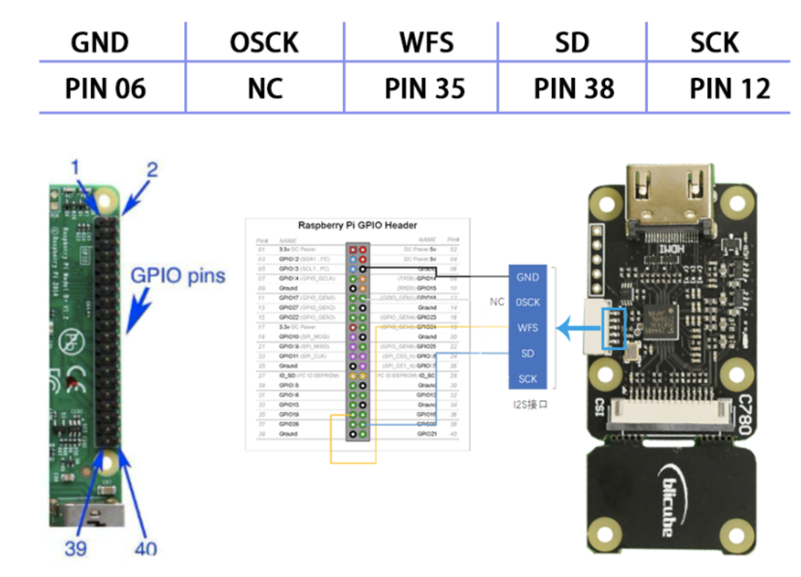
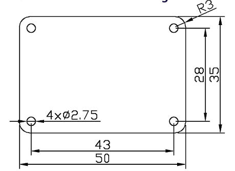

HDMI to CSI&I2S bridge guide
Convert HDMI signal acquisition into CSI signal and I2S audio signal.
Introduction
This module takes the incoming HDMI signal and converts it into a separate CSI signal and I2S audio signal. HDMI input supports up to 1080P60Hz. It works well on raspberry pi, there are three versions of this module in history(C779、C780、C790). C790 is the latest version. C790 has mitigate HDMI backpowering,also has two csi channels and four csi channels at the same time. 
Features
C790
hardware parameters
- HDMI input: supports up to 1080P60Hz on Raspberry Pi
- HDMI to CSI-2 bridge chip:Toshiba TC358743XBG
- 4 CSI-2 channels & clock
- The CSI-2 interface, with 15 pin FPC seat, spacing 1.0 mm, is located on the front of the C790 module.
- The CSI-2 interface, with 22 pin FPC seat, spacing 0.5 mm, is located on the back of the C790 module.
- Size: 30 x 45 mm
- Install:4 x M2.5
- Power supply:3.3V
- Weight: 10g
interface

C790 has two csi output interface. In fornt of C790, the CSI-2 interface is 15 pin FPC seat,
spacing 1.0 mm. In back of C790, the CSI-2 interface is 22 pin FPC seat, spacing 0.5 mm.

size

C780
C780A hardware parameters
- HDMI input: supports up to 1080P50Hz on raspberry pi(Limited by the number of CSI-2 channels)
- HDMI to CSI-2 bridge chip:Toshiba TC358743XBG
- 2 CSI-2 channels & clock
- CSI-2 interface: 15 pin FPC seat, spacing 1.0 mm
- Size: 30 x 65 mm (unbroken PCB size); 30 x 45 mm (PCB size after breaking)
- Install:6 x M2.5
- Power supply:3.3V
- Weight: 10g
C780B hardware parameters
- HDMI input: supports up to 1080P60Hz on raspberry pi
- HDMI to CSI-2 bridge chip:Toshiba TC358743XBG
- 4 CSI-2 channels & clock
- CSI-2 interface: 22 pin FPC seat, spacing 0.5 mm
- Size: 30 x 65 mm (unbroken PCB size); 30 x 45 mm (PCB size after breaking)
- Install:6 x M2.5
- Power supply:3.3V
- Weight: 10g
interface

The wiring of audio part is shown in Figure.

size
The size of C780 is shown in Figure. There are 6 mounting holes with a diameter of 2.75mm,
which are suitable for M2.5 screws.

As shown in Figure, the user can directly fix the module on the raspberry pi zero.C780 is designed
to be broken, and the hole spacing before breaking can be perfectly installed with most series of
raspberry pi.

C779
hardware parameters
- HDMI input: supports up to 1080P50Hz on raspberry pi(Limited by the number of CSI-2 channels)
- HDMI to CSI-2 bridge chip:Toshiba TC358743XBG
- 2 CSI-2 channels & clock
- CSI-2 interface: 15 pin FPC seat, spacing 1.0 mm
- Size: 35 x 50 mm
- Install:4 x M2.5
- Power supply:3.3V
- Weight: 10g
size
The size of C779 is shown in Figure. There are 4 mounting holes with a diameter of 2.75mm,
which are suitable for M2.5 screws.

Software demo
The use guide of C790/C780/C779 depends on the official Raspberry Pi OS version you are using.
Different versions have different usage methods. If you have some questions, Join our BLIKVM Discord
Community for Support, FAQ & News!
To use the kernel drivers, please update your system. There are a few things that have changed with the
5.4 kernel, so these instructions are for 5.4 or later. If “uname -a” reports anything less, then fix
this before proceeding.
pi@raspberrypi:~ $ uname -a
Linux raspberrypi 5.10.63-v7l+ #1459 SMP Wed Oct 6 16:41:57 BST 2021 armv7l GNU/Linux
1. Update & upgrade the raspberry pi system (It will take a long time depend on the different country)
2. Enable camera module (the camera is enabled by default in Raspberry pi Bullseys OS)
Navigate to ‘Interfacing Options’ and hit Enter. Now select the ‘Camera’ option, and hit the Enter key to enable it. Select “Finish” and select to reboot your Raspberry Pi. reboot is important!!3. Edit /boot/config.txt (that will need sudo)
Add the line: Add the line if your shield support audio like C780 or C790. please append the If (and only if) you have a device such as the C780 or C790 that supports the 22pin connector with all 4 lanes wired out, and are using a Compute Module with the CAM1 connector that also has all 4 lanes wired up, you can use:!!! note "4. Check the amount of memory assigned to the CMA heap with “dmesg | grep cma”. The first line should be along the lines of"
If it reports less than 96MB assigned to CMA, then edit /boot/cmdline.txt and add to the start of the line. Do NOT add any carriage returns. !!! note "5. Reboot. If all is well you should get a /dev/video0 device, and “v4l2-ctl –list-devices” will tell you that it is provided by Unicam. After connecting all the cables, power on the Raspberry Pi, the C790 indicator light is normally green, and after opening the Raspberry Pi terminal, enter the following command:"pi@raspberrypi:~ $ ls /dev/video0
/dev/video0
pi@raspberrypi:~ $ v4l2-ctl --list-devices
bcm2835-codec-decode (platform:bcm2835-codec):
/dev/video10
/dev/video11
/dev/video12
/dev/video18
/dev/media1
bcm2835-isp (platform:bcm2835-isp):
/dev/video13
/dev/video14
/dev/video15
/dev/video16
/dev/media0
unicam (platform:fe801000.csi):
/dev/video0
/dev/video1
/dev/media2
00ffffffffffff005262888800888888
1c150103800000780aEE91A3544C9926
0F505400000001010101010101010101
010101010101011d007251d01e206e28
5500c48e2100001e8c0ad08a20e02d10
103e9600138e2100001e000000fc0054
6f73686962612d4832430a20000000FD
003b3d0f2e0f1e0a2020202020200100
020321434e041303021211012021a23c
3d3e1f2309070766030c00300080E300
7F8c0ad08a20e02d10103e9600c48e21
0000188c0ad08a20e02d10103e960013
8e210000188c0aa01451f01600267c43
00138e21000098000000000000000000
00000000000000000000000000000000
00000000000000000000000000000000
cd ~
sudo nano edid.txt
#copy the above commend in edid.txt, save&exit;
pi@raspberrypi:~ $ v4l2-ctl --set-edid=file=edid.txt --fix-edid-checksums
CTA-861 Header
IT Formats Underscanned: yes
Audio: yes
YCbCr 4:4:4: no
YCbCr 4:2:2: no
HDMI Vendor-Specific Data Block
Physical Address: 3.0.0.0
YCbCr 4:4:4 Deep Color: no
30-bit: no
36-bit: no
48-bit: no
CTA-861 Video Capability Descriptor
RGB Quantization Range: yes
YCC Quantization Range: no
PT: Supports both over- and underscan
IT: Supports both over- and underscan
CE: Supports both over- and underscan
7. The driver does NOT automatically switch to the resolution detected. Use the command:
pi@raspberrypi:~ $ v4l2-ctl --query-dv-timings
Active width: 1280
Active height: 720
Total width: 1650
Total height: 750
Frame format: progressive
Polarities: -vsync -hsync
Pixelclock: 74250000 Hz (60.00 frames per second)
Horizontal frontporch: 0
Horizontal sync: 370
Horizontal backporch: 0
Vertical frontporch: 0
Vertical sync: 30
Vertical backporch: 0
Standards:
Flags:
8. The chip supports two formats – BGR3 (the default) and UYVY. BGR3 is 24bpp, and UYVY is YUV4:2:2 16bpp.
Over the normal 2 CSI-2 lanes the data rate is such that BGR3 can run at a maximum of 1080p30, whilst UYVY will go up to 1080p50. Use the following command to select UYVY, however your application may override that.
9. Check that the audio drivers / card is available to ALSA.
Note: card 1 means that the card number for the TC358743XBG is “1” and it might be different.10. Install GStreamer tool.
Check gstreamer tool version: Note: Different versions have different command line parameters, which is very annoying.11. Use gstreamer to record video and audio
#GStreamer v1.14 command
gst-launch-1.0 v4l2src io-mode=5 ! video/x-raw, format=UYVY, framerate=25/1 ! v4l2h264enc output-io-mode=4 ! video/x-h264,profile=high ! h264parse ! queue ! matroskamux name=mux ! filesink location=foo.mkv alsasrc device=hw:1 ! audio/x-raw,rate=48000,channels=2 ! audioconvert ! avenc_aac bitrate=48000 ! aacparse ! queue ! mux.
#The command to recode a video with audio. (GStreamer 1.18.4)
gst-launch-1.0 -vvv v4l2src ! "video/x-raw,framerate=30/1,format=UYVY" ! v4l2h264enc extra-controls="controls,h264_profile=4,h264_level=13,video_bitrate=256000;" ! "video/x-h264,profile=high, level=(string)4.2" ! h264parse ! queue ! matroskamux name=mux ! filesink location=foo.mkv alsasrc device=hw:1 ! audio/x-raw,rate=48000,channels=2 ! audioconvert ! avenc_aac bitrate=48000 ! aacparse ! queue ! mux.
#The sample command to recode a video without audio. (C779 doesn't support audio)
gst-launch-1.0 -vvv v4l2src ! "video/x-raw,framerate=30/1,format=UYVY" ! v4l2h264enc extra-controls="controls,h264_profile=4,h264_level=13,video_bitrate=256000;" ! "video/x-h264,profile=high, level=(string)4.2" ! h264parse ! queue ! matroskamux name=mux ! filesink location=foo.mkv
Press CTRL+C to end recording.
 For the above HDMI device, because the frame rate is 60, so we modify the framerate parameter to 60 like the followint command.
Record the video only:
For the above HDMI device, because the frame rate is 60, so we modify the framerate parameter to 60 like the followint command.
Record the video only:
gst-launch-1.0 -vvv v4l2src ! "video/x-raw,framerate=60/1,format=UYVY" ! v4l2h264enc extra-controls="controls,h264_profile=4,h264_level=13,video_bitrate=256000;" ! "video/x-h264,profile=high, level=(string)4.2" ! h264parse ! queue ! matroskamux name=mux ! filesink location=foo.mkv
gst-launch-1.0 -vvv v4l2src ! "video/x-raw,framerate=60/1,format=UYVY" ! v4l2h264enc extra-controls="controls,h264_profile=4,h264_level=13,video_bitrate=256000;" ! "video/x-h264,profile=high, level=(string)4.2" ! h264parse ! queue ! matroskamux name=mux ! filesink location=foo.mkv alsasrc device=hw:1 ! audio/x-raw,rate=48000,channels=2 ! audioconvert ! avenc_aac bitrate=48000 ! aacparse ! queue ! mux.
Packing List
C790

Test video
C780A test:https://www.youtube.com/watch?v=ecqyINoiHNQ
C780B test:https://www.youtube.com/watch?v=nc-hwPT2Uak&t=15s
Purchase link
Purchase：C790 & C780
Purchase：C779